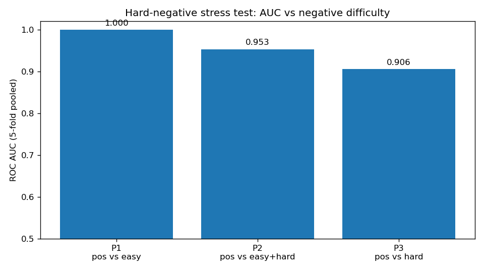

Exposing negative-control bias in protein phase-separation predictors — plus a physics-informed loss spec
Implements: Physics-Informed Neural Networks for Predicting Liquid-Liquid Phase Separation in Neurodegenerative Disease Proteins
Computational predictors of liquid-liquid phase separation report near-perfect accuracy — but they are validated against trivially separable negative controls (crystallized, structured proteins), not the disordered proteins a real screen would encounter.
Physics-Informed Neural Networks for Predicting Liquid-Liquid Phase Separation in Neurodegenerative Disease Proteins (under journal revision, 2026). No standard stress test separates genuine generalization from negative-control bias, and 'physics-informed' is used loosely for models whose loss contains no actual physics.
A stratified evaluation protocol (P1: easy negatives, P2: mixed, P3: hard negatives) on synthetic biophysical features, plus a loss specification that is genuinely physics-informed in the Raissi sense: BCE + Flory–Huggins free-energy residual + Stockmayer percolation penalty. The implementation demonstrates the AUC collapse and the computability of the physics residual.
| Protocol | AUC |
|---|---|
| P1: positives vs easy negatives | 1.0000 |
| P2: balanced easy + hard | 0.9534 |
| P3: positives vs hard negatives | 0.9061 |
Synthetic 4-feature protein panel, numpy logistic regression, stratified 5-fold CV. The headline 1.000 collapses under the hard-negative stress test — the bias is in the controls, not the model. FHP physics-informed loss demo: BCE 0.0785 + gradient term 0.0042 + percolation term 0.0014 = 0.0842 (loss computability demo, not a trained net).

src/ghosh_research/pinn/
__init__.py public API
llps.py synthetic proteins, stratified eval, FHP loss
experiments/pinn_experiment.py
results/pinn/ results.md · charts.pngRun it: python experiments/pinn_experiment.py · Quickstart: python examples/04_pinn_quickstart.py